임상심리사-2급 (2010-05-09 기출문제)
1과목: 심리학개론
1. 다음 중 전집(모집단)의 표준편차를 적은 수의 표본자료에서 추정할 경우 사용하는 분포로 가장 적합한 것은?
- 정규분표
- t 분포
- X2 분포
- F 분포
(정답률: 53%)

2. 다음 중 강화(reinforcement)에 관한 설명으로 틀린 것은?
- 계속적 강화보다는 부분강화가 소거를 더욱 지연시킨다.
- 고정비율 계획보다는 변화비율 계획이 소거를 더욱 지연시킨다.
- 강화가 지연됨에 따라 그 효과가 감소한다.
- 어떤 행동에 대해 돈을 주거나 칭찬을 해 주는 것은 일차 강화물이다.
(정답률: 66%)
3. 어떤 연구에서 종속변인에 나타난 변화가 독립변인의 영향 때문이라고 추론할 수 있는 정도를 의미하는 것은?
- 내적 신뢰도
- 외적 신뢰도
- 내적 타당도
- 외적 타당도
(정답률: 85%)
4. 마리화나가 기억에 미치는 영향을 알아보기 위한 실험에서 선행조건인 마리화나의 양은?
- 독립변수
- 종속변수
- 가외변수
- 함수
(정답률: 89%)
5. 다음 중 동조에 관한 연구에서 발견된 사실은?
- 집단의 크기에 비례하여 동조의 가능성이 증가한다.
- 과제가 쉬울수록 동조가 많이 일어난다.
- 개인이 집단에 매력을 느낄수록 동조하는 경향이 더 많다.
- 집단에 의해서 완전하게 수용받고 있다고 느낄수록 동조하는 경향이 더 많다.
(정답률: 78%)
6. 다음 중 실험법과 조사법의 가장 근본적인 차이점은?
- 실험실 안에서 연구를 수행하는지의 여부
- 변인을 통제하는지의 여부
- 연구변인들의 수가 많은지의 여부
- 연구자나 연구 참가자의 편파가 존재하는지의 여부
(정답률: 88%)
7. 다음 ( )안에 들어갈 가장 알맞은 것은?
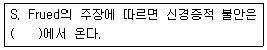
- 환경에 있는 실제적 위협
- 환경 내의 어느 일부를 과장해서 해석함
- Id의 충동과 Ego의 억제 사이의 무의식적 갈등
- 그 사회의 기준에 맞추어 생활하지 못함
(정답률: 80%)
8. 다음 중 조작적 조건형성에 대한 설명으로 틀린 것은?
- 조형(shaping)은 차별 강화(differential reinforcement), 계속적 접근(successiveapproximation)의 두 요소를 통하여 이루어진다.
- 미신적 행동은 비 유관강화(non-contingent reinforcement)의 예이다.
- Premack 원리는 강화의 상대성을 제시하고 있다.
- 어떤 반응이 부분적 강화보다는 계속적 강화로 획득되면 소거시키기가 어려워진다.
(정답률: 66%)
9. 다음 중 망각의 원인에 대한 설명으로 틀린 것은?
- 분명히 읽었던 정보를 기억할 수 없는 원인은 비효율적 부호화 때문이라고 할 수 있다.
- 소멸이론에서 망각은 정보 간의 간섭 때문이라고 주장한다.
- 새로운 학습이 이전의 학습을 간섭하기 때문에 망각이 일어나는 것을 역행성 간섭이라고 한다.
- 망각을 인출실패로 간주하는 주장도 있다.
(정답률: 72%)
10. 기억에 정보를 저장하기 위해서 환경의 물리적 정보의 속성을 기억에 저장할 수 있는 속성으로 변화시키는 과정은?
- 주의과정
- 각성과정
- 부호화과정
- 인출과정
(정답률: 86%)
11. 어떤 사람의 발달이 방해를 받은 결과로 그 사람이 특정 발달단계에 그대로 머물러 있게 하는 방어기제는?
- 퇴행
- 고착
- 반동형성
- 전위
(정답률: 90%)
12. Kelley의 공변 원리에 의하면 3가지 정보를 이용해 귀인이 이루어진다고 본다. 이 3가지 정보에 포함되지 않는 것은?
- 일치성
- 특이성
- 일관성
- 안정성
(정답률: 60%)
13. 잘생긴 사람을 보면 그 사람이 성격도 좋고 리더십도 있을 것이라고 생각하는 경향은?
- 후광효과
- 초두효과
- 평균원리
- 귀인
(정답률: 84%)
14. 범죄자를 추적하는 추적견을 훈련시키거나 서커스에서 탁구를 하는 비둘기 등의 동물을 훈련시킬 때 사용되는 도구적 조건형성 과정의 방법은?
- 조형(shaping)
- 미신행동(superstition)
- 조건강화(conditioned reinforcer)
- 강화계획(reinforcement schedule)
(정답률: 61%)
15. Piaget의 인지발달 단계 중 보존개념이 획득되는 시기는?
- 감각운동기
- 전조작기
- 구체적 조작기
- 형식적 조작기
(정답률: 49%)
16. 다음과 같은 입장을 취하고 있는 성격에 대한 이론은?
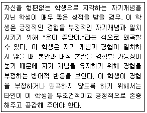
- 특질이론
- 정신역동이론
- 현상학적 이론
- 사회인지이론
(정답률: 68%)
17. 정신분석적 관점에서 성(性)이나 공격성의 욕구가 갑작스럽게 느껴질 때의 불안감은 다음 중 어디에 해당하는가?
- 신경증적 불안
- 도덕적 불안
- 현실 불안
- 분리불안
(정답률: 66%)
18. Freud와 비교하여 Erikson이 주장하는 인간의 발달에 관한 관점의 내용만을 바르게 짝지은 것은?
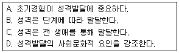
- A, B
- B, C
- C, D
- A, D
(정답률: 50%)
19. 언어적 재료에 대한 장기기억의 주된 특징으로 가장 적합한 것은?
- 무한대의 저장능력, 의미적 부호화, 비교적 영속적
- 제한된 저장능력, 의미적 부호화, 빠르게 망각
- 미지의 저장능력, 음향적 부호화, 비교적 영속적
- 제한된 저장능력, 감각적 부호화, 빠르게 망각
(정답률: 80%)
20. Freud가 제시한 성격구조 중 원초아의 특징은?
- 욕구지연의 원리
- 쾌락의 원리
- 양심의 원리
- 현실의 원리
(정답률: 83%)
2과목: 이상심리학
21. 다음 중 정신분열병의 양성증상에 해당하는 것은?
- 환각
- 무욕증
- 둔마된 행동
- 빈곤한 언어
(정답률: 83%)
22. 다음 사례에서 A씨에 대해 일차적으로 고려 가능한 진단명으로 가장 적합한 것은?
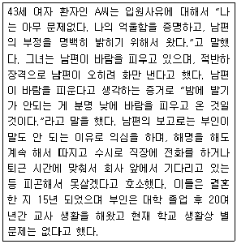
- 정신분열병, 편집증적 유형
- 망상장애
- 히스테리성 성격장애
- 편집성 성격 장애
(정답률: 50%)
23. 다음 중 틱(tic)의 특징이 아닌 것은?
- 갑작스럽고 빠른 동작 또는 음성
- 반복적인 동작 또는 음성
- 율동적인 동작 또는 음성
- 상동증적인 동작 또는 음성
(정답률: 71%)
24. 다음 중 사회공포증의 증상이 아닌 것은?
- 당황할 가능성이 있는 사회적 상황에 대한 공포
- 백화점, 영화관 등 넓은 공간에 대한 지속적 공포
- 자신의 공포가 과도하고 비합리적임을 인식
- 두려워하는 사회적 상황을 회피
(정답률: 76%)
25. 순종적이던 개가 실험과정에서 안절부절 못하고, 공격적이며 대소변을 가리지 못하는 등의 실험신경증(experimental neurosis)은 다음 중 어떤 요인에 어려움이 있을 때 유발되는 것인가?
- 자극 일반화
- 소거
- 강화
- 자극변별
(정답률: 59%)
26. 정신분석적 입장에서 볼 때 강박장애와 밀접하게 연관된 주요 방어기제가 아닌 것은?
- 투사
- 고립
- 대치
- 취소
(정답률: 60%)
27. 다음 중 물질의존에 대한 설명으로 틀린 것은?
- 내성이 나타난다.
- 금단증상이 나타난다.
- 물질사용을 중단하거나 조절하려고 해도 뜻대로 되지 않는다.
- 물질사용으로 인하여 신체적ㆍ정신적 문제가 생기면 사용을 중지한다.
(정답률: 86%)
28. 다음 사례에서 가장 가능성이 높은 진단은?
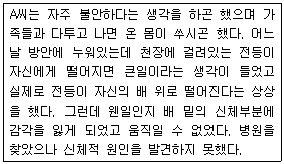
- 건강염려증
- 전환장애
- 신체화장애
- 신체변형장애
(정답률: 70%)
29. 다음 중 어떤 장애를 가진 아동이 성인이 되었을 때 해당 장애의 증상을 나타낼 가능성이 가장 낮은 것은?
- 기능적 유뇨증
- 지능이 낮은 자폐증
- 어린 나이에 시작된 품행장애
- 주의력 결핍 및 과잉행동 장애
(정답률: 77%)
30. DSM-Ⅳ의 진단구분에서 기질성 뇌 증후군에 포함되지 않는 장애는?
- 치매
- 섬망
- 기억상실장애
- 해리성장애
(정답률: 49%)
31. 해리성 정체감 장애의 특징이 아닌 것은?
- 지배적 성격에서는 다른 성격으로 있었던 기간에 대한 기억상실을 호소한다.
- 이 장애를 보이는 사람은 흔히 어렸을 때 신체적으로나 성적으로 학대받은 경험이 있다.
- 심한 혼란으로 정신과적인 치료를 받은 경험을 갖고 있다.
- 최면에 잘 걸리지 않는 성격을 보인다.
(정답률: 67%)
32. 생후 5개월까지 정상적인 발달이 이루어지다가, 만 4세 이전에 머리 크기의 성장이 저하되고, 기이한 손놀림이 나타나며, 사회적 교류에 어려움을 나타내는 발달장애는?
- 레트장애
- 아스퍼거 장애
- 소아기 붕괴장애
- 자폐증
(정답률: 59%)
33. 다음 중 편집성 성격장애의 특징적인 증상은?
- 의심
- 과대망상
- 정서의 변동
- 정서적 무관심
(정답률: 79%)
34. 분열성 성격장애와 분열형 성격장애의 공통점만을 짝지은 것은?
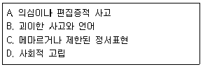
- A, B
- B, C
- C, D
- B, D
(정답률: 66%)
35. 다음 중 불안에 관한 설명으로 옳은 것은?
- 객관적으로 경험되는 불쾌한 정서이다.
- 환경에 적응하기 위한 생체의 기본적 반응 양식이다.
- 걱정의 원인이 분명하다.
- 생리적 각성은 일어나지 않는다.
(정답률: 76%)
36. DSM-Ⅳ상에서 B군 성격장애에 속하지 않는 것은?
- 연극성 성격장애
- 편집성 성격장애
- 경계선 성격장애
- 자기애성 성격장애
(정답률: 75%)
37. 다음 중 우울장애의 원인에 관한 설명으로 옳은 것은?
- 신경전달물질인 노르에피네프린 및 세로토닌의 결핍과 관련이 있다.
- 갑상선 기능 항진과 관련된다.
- 코티졸 분비감소와 관련된다.
- 비타민 B1, B6, 엽산의 과다와 관련이 있다.
(정답률: 79%)
38. 4세 아동 A는 어머니와 애정적 관계를 형성하지 못하며, 장난감을 가지고 노는 데는 흥미가 없고, 사물을 일렬로 배열하거나 자신의 몸을 앞뒤로 흔들면서 알 수 없는 말을 한다. 아동 A에게 진단 할 수 있는 가장 가능성이 높은 장애는?
- 자폐성장애
- 정신지체
- 틱장애
- 학습장애
(정답률: 75%)
39. 환각과 망상이 주된 증상으로 나타나는 정신분열증의 가장 흔한 하위 유형은?
- 긴장형 정신분열증
- 와해형 정신분열증
- 잔류형 정신분열증
- 편집형 정신분열증
(정답률: 38%)
40. 다음과 가장 관련이 높은 정신장애는?
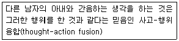
- 주요 우울장애
- 강박장애
- 외상 후 스트레스 장애
- 일반화된 불안장애
(정답률: 76%)
3과목: 심리검사
41. 성격을 측정하는 자기보고식 방식에 관한 설명으로 옳은 것은?
- 개인의 심층적인 내면을 탐색하는데 많이 사용된다.
- 개인의 반응경향성에 민감하지 않다.
- 강제선택형 문항은 개인의 묵종 경향성을 배제하는데 효과적인 문항제작 기법이다.
- 사회적으로 바람직하게 응답하려는 경향을 배제하기 어렵다.
(정답률: 61%)
42. MMPI를 해석할 때는 대개는 상승척도 쌍, 즉 T점수가 70을 초과하여 가장 높은 2개의 척도를 중심으로 논의하게 된다. 다음은 어떤 상승척도 쌍에 대한 설명인가?
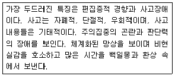
- 1-3 / 3-1 유형
- 2-0 / 0-2 유형
- 6-8 / 8-6 유형
- 4-9 / 9-4 유형
(정답률: 83%)
43. 주의력 결핍 및 과잉활동장애(ADHD)로 진단된 아동의 웩슬러 지능 검사상 수행이 저하되기 쉬운 소검사는?
- 숫자
- 토막 짜기
- 공통성
- 차례 맞추기
(정답률: 55%)
44. 다음 중 성격 특질이론 혹은 유형이론에 입각하여 개발된 성격 검사가 아닌 것은?
- 아이젱크 성격검사(EPI)
- 캘리포니아 성격검사(CPI)
- 네오 성격검사(NEO-PI)
- 16 성격검사(16-PF)
(정답률: 50%)
45. 다음 중 지능이론과 학자가 올바르게 짝지어진 것은?
- Guilford는 지능을 일반적인 지적 활동과 관련되는 일반요인(g-factor)으로 구분하였다.
- Cattell은 지능을 선천적이며 개인의 경험과 무관한 결정성 지능과, 후천적이며 학습된 지식과 관련된 유동성 지능으로 구분하였다.
- Thurstone은 지능이 7개의 요인으로 구성되어 있다고 보는 다요인설을 주장하고, 이를 인간의 기본정신능력이라고 하였다.
- Spearman은 지능에 대한 3차원적 구조모델을 제안하였는데 내용, 조작, 결과의 모든 가능한 조합으로 지능의 요인들을 제시하고 있다.
(정답률: 66%)
46. 특정 학업과정이나 직업에 대한 앞으로의 수행능력이나 적응을 예측하는 검사는?
- 적성검사
- 지능검사
- 성격검사
- 능력검사
(정답률: 75%)
47. 다음 중 외상성 뇌 손상의 심각도에 영향을 미치는 요인과 가장 거리가 먼 것은?
- 연령
- 성격
- 반복된 두부외상
- 상해전 알코올 남용 여부
(정답률: 71%)
48. 다음 중 학생의 성취도를 알아보려고 할 때 가장 적합한 검사는?
- Vineland Adaptive Behavior Scales
- Wisconsin Behavior Rating Scale
- Woodcock-Johnson Psycho-educational Battery
- Conners Teacher Rating Scale
(정답률: 52%)
49. 다음 중 검사가 측정하고자 하는 속성을 제대로 측정하였는지를 논리적 사고에 입각한 논리적 분석과정을 통해 주관적으로 판단하는 타당도는?
- 공인타당도
- 구인타당도
- 내용타당도
- 예측타당도
(정답률: 65%)
50. 집단용 지능검사의 특징으로 옳은 것은?
- 개인용 검사에 비해 지적 기능을 보다 신뢰성 있게 파악할 수 있다.
- 대규모 실시로 실시와 채점, 해석이 상대적으로 어렵다.
- 개인용 검사에 비해 임상적인 유용성이 높다.
- 선별검사(screening test)로 사용하기에 적합하다.
(정답률: 78%)
51. 다음은 어떤 검사에 대한 설명인가?
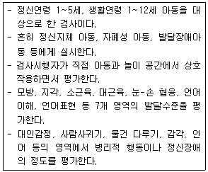
- 교육진단검사
- 유아 발달 수준검사
- 덴버 발달검사
- 고대-비네 검사
(정답률: 18%)
52. 다음은 MMPI의 2개 척도 상승 형태분석의 한 예이다. 어느 척도 상승에 해당하는 것인가?
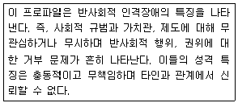
- 4-9
- 2-7
- 1-2
- 3-5
(정답률: 65%)
53. MMPI 5번 척도가 높은 여대생의 경우에 가능한 해석으로 옳은 것은?
- 성격적으로 수동-공격적인 특성이 있다.
- 반드시 남성적인 흥미를 나타내지는 않는다.
- 자신감이 부족하고 충동적이다.
- 심미적이고 예술적인 취미를 가지며 지능이 우수하다.
(정답률: 65%)
54. 22세 된 여대생이 수업시간에 집중이 잘 안되고, 수업내용을 따라가기 어렵다는 이유로 지능검사를 받았고, 그 결과는 다음과 같다. 이 결과에 대한 해석으로 적합하지 않은 것은?
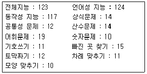
- 긴 자료를 암기해야 할 경우 이를 나누어서 암기하는 방식이 도움이 될 수 있다.
- 피검사자는 학습할 내용이나 자신의 생각을 말로 표현함으로서 학습을 증진시킬 수 있다.
- 피검사자는 습득한 지식, 잠재력은 강점을 보인다.
- 피검사자는 학습 열의가 높고, 수행속도가 빨라 자신의 능력을 발취하는데 기민한 모습을 보인다.
(정답률: 44%)
55. MMPI의 임상척도 중 자신의 신체적 기능 및 건강에 대하여 과도하고 범적인 관심을 갖는 건강염려증적인 양상을 측정하는 척도는?
- 심기증 척도(Hs)
- 우울증 척도(D)
- 히스테리 척도(Hy)
- 편집증 척도(Pa)
(정답률: 75%)
56. MMPI 8~9 척도가 70T 이상으로 상승한 사람들에 대한 진단적 해석으로 적합하지 않은 것은?
- 대인관계에서 의심과 불신감이 많아서 타인과 깊은 정서적 교류를 회피하고 일정한 거리를 유지한다.
- 망상과 정서적 부적절성이 특징적이다.
- 주의집중에 심한 어려움이 있다.
- 정서적으로 무감동하며 발병이 서서히 진행된다.
(정답률: 48%)
57. 다음 중 어린이용 시지각-운동통합의 발달검사로, 24개의 기하학적 형태의 도형으로 이루어진 지필검사는?
- VMI
- BGT
- CPT
- CBCL
(정답률: 52%)
58. 다음 중 신경심리검사에 해당되지 않는 것은?
- H-R(Halstead-Reitan Battery)
- L-N(Luria-Nebraska Battery)
- BGT(Bender Gestalt Test)
- Rorschach
(정답률: 70%)
59. 지능이란 기본적 능력으로서 판단력, 이해력, 논리력, 추리력, 기억력이 그 주요소라고 정의하고, 정상아동과 정신지체 아동을 감별하기 위한 목적으로 최초의 실용적인 지능검사를 제작하여 지능검사 발달에 공헌한 사람은?
- Galton
- Binet
- Spearman
- Wechsler
(정답률: 68%)
60. 다음 중 발달검사의 특징에 관한 설명으로 옳은 것은?
- 아동을 직접 검사하지 않고 보호자의 보고에 의존하는 발달검사도구도 있다.
- 발달검사의 목적은 유아의 지적 능력 파악이 주목적이다.
- 영유아 기준 발달상 미숙한 단계이므로 다양한 영역을 측정하기 어렵다.
- 발달검사는 주로 언어이해 및 표현능력으로 구성되어 있다.
(정답률: 71%)
4과목: 임상심리학
61. 다음 중 통제된 관찰에 관한 설명으로 적합하지 않은 것은?
- 스트레스 면접은 통제된 관찰의 한 유형이다.
- 자기-탐지 기법은 통제된 관찰의 한 유형이다.
- 역할시연은 가장 일반적으로 사용되는 통제된 관찰 유형이다.
- 통제된 관찰은 모의실험 방식에서 관심행동이 나타나도록 한다.
(정답률: 72%)
62. 수련을 끝낸 임상심리 전문가들이 집단 개업활동을 할 때 주의해야 할 사항은?
- 자기의 결정, 직업윤리, 활동에 대한 개인적인 책임
- 직업적인 경쟁과 성격적인 충돌 가능성
- 독립적인 사무실의 확보 비용
- 개인적이고 직업적인 고립감
(정답률: 64%)
63. 자해 행동을 보이는 아동에 대한 심리평가로 가장 적합한 것은?
- 부모면접
- 자기보고형 성격검사
- 투사법 검사
- 행동평가
(정답률: 54%)
64. 아동을 상담할 때 일반적으로 고려해야 할 사항과 가장 거리가 먼 것은?
- 아동에게 치료 중 일어난 일은 성인의 경우와 마찬가지로 부모 등에게는 반드시 비밀로 유지되어야만 한다.
- 아동은 놀이를 통해 자신의 생각과 감정을 표현하기 때문에 놀이의 기능을 중요하게 다루어야 한다.
- 아동은 발달과정에 있기 때문에 생활조건을 변화시키는데 있어 거의 무력하다.
- 아동은 부모에게 의존적 상태에 있기 때문에 상담자는 가족의 역동을 이해하고 변화시키는 것이 바람직하다.
(정답률: 77%)
65. Wӧlpe의 상호억제원리와 밀접히 관련된 행동치료기법은?
- 혐오치료
- 행동조성
- 긍정적 강화
- 체계적 둔감화
(정답률: 68%)
66. 심리치료 과정에서 저항이 일어나는 일반적인 이유와 가장 거리가 먼 것은?
- 환자가 변화를 원할지라도 환자의 삶에 중요한 영향을 미치는 타인들이 현 상태를 유지하도록 방해할 수 있기 때문이다.
- 부적응적 행동을 유지함으로써 얻는 이차적 이득을 환자가 포기하기 어렵기 때문이다.
- 익숙한 행동을 변화시키려는 시도가 환자에게 위협을 주기 때문이다.
- 치료자가 가진 가치나 태도가 환자에게 위협적이기 때문이다.
(정답률: 80%)
67. 다음 상황에서 교사가 채택할 강화계획으로 가장 적합한 것은?
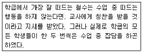
- DRL(differential reinforcement of low rates)
- DRO(differential reinforcement of zero responding)
- DRI(differential reinforcement of incompatible responding)
- CSR(concurrent schedules of reinforcement)
(정답률: 42%)
68. 잠재적인 학습문제의 확인, 학습실패 위험에 처한 아동에 대한 프로그램 운용, 학교 구성원들에게 다양한 관점 제공, 부모 및 교사에게 특정 문제행동에 대한 대처기술을 제공하는 학교심리학자의 역할은?
- 예방
- 교육
- 부모 및 교사훈련
- 자문
(정답률: 30%)
69. 행동평가에서 명세화해야 하는 것으로 적합하지 않은 것은?
- 행동결과
- 목표행동
- 성격특질
- 선행조건
(정답률: 78%)
70. 다음 중 효과적인 경청과 가장 거리가 먼 것은?
- 내담자가 심각한 듯 얘기를 하지만, 면접자가 보기에는 그렇게 보이지 않을 때에는 중단시킨다.
- 면접자는 반응을 보이기에 앞서서, 내담자가 스스로 말할 시간을 충분히 주려고 한다.
- 면접자는 내담자에게 주의를 많이 기울인다.
- 내담자가 문제점을 피력할 때 가로막지 않고, 문제점에 관한 논쟁을 피하지 않는다.
(정답률: 80%)
71. 다음 중 규준(norm)에 관한 설명으로 가장 적합한 것은?
- 측정한 점수의 일관성 정도를 제공해 준다.
- 검사실시와 과정이 규정된 절차에서 이탈된 정도를 제공해 준다.
- 특정집단의 전형적인 또는 평균적인 수행지표를 제공해 준다.
- 연구자가 측정한 의도에 따라 측정이 되었는지의 정도를 제공해 준다.
(정답률: 67%)
72. 1896년에 임상심리학의 시작으로 간주되는 심리상담소를 설립한 사람은?
- S. Freud
- W. James
- F. Galton
- L. Witmer
(정답률: 79%)
73. 임상심리학자의 새로운 전문영역 중에서 비만 스트레스 관리 등과 가장 밀접히 관련되는 것은?
- 신경심리학
- 건강심리학
- 법정심리학
- 아동임상심리학
(정답률: 53%)
74. 내담자의 말과 행동에서 표현된 기본적인 감정, 생각 및 태도를 상담자가 다른 참신한 말로 부연해주는 것은?
- 해석
- 반영
- 직면
- 명료화
(정답률: 65%)
75. 다음 중 평가적 면접에서 면접자의 태도로서 그 중요도가 가장 낮은 것은?
- 수용
- 해석
- 이해
- 진실성
(정답률: 56%)
76. 다음 중 두 뇌반구의 기능에 관한 설명으로 적합하지 않은 것은?
- 좌반구는 세상의 좌측을 보고, 우반구는 우측을 본다.
- 좌측 대뇌피질의 전두엽 가운데 운동피질 영역의 손상은 언어문제 혹은 실어증을 일으킨다.
- 대부분의 언어장애는 좌반구와 관련이 있다.
- 좌반구는 말, 읽기, 쓰기 및 산수를 통제한다.
(정답률: 94%)
77. 교통사고를 당한 뒤 자동차에 대한 두려움이 생겨 퇴원하지 않겠다는 30대 여자환자에 대한 적합한 자문활동이 아닌 것은?
- 체계적 둔감법을 사용하여 자동차에 대한 공포증을 치료해 준다.
- 홍수법으로 자동차에 대한 공포증을 치료해준다.
- 입원하고 있는 동안 장기적 정신분석치료를 통해 성격개조를 권한다.
- 입원을 계속해서 얻는 부차적 이득이 있는지 평가한다.
(정답률: 82%)
78. 다음 중 접수면접의 주요 목적과 가장 거리가 먼 것은?
- 환자를 병원이나 진료소에 의뢰할지를 고려한다.
- 제공되는 서비스에 대한 환자의 질문에 대답한다.
- 치료자에게 신뢰, 라포 및 희망을 심어주려고 시도한다.
- 환자가 자신이나 다른 사람을 해칠 중대한 위험상태에 있는지 결정한다.
(정답률: 79%)
79. 파킨슨병 및 헌팅턴병 같은 운동장애의 발병과 관련이 가장 큰 것은?
- 변연계
- 기저핵
- 시상
- 시상하부
(정답률: 62%)
80. 다음 중 대뇌피질 각 영역의 기능에 관한 설명으로 옳은 것은?
- 측두엽-망막에서 들어오는 시각정보를 받아 분석하며 이 영역이 손상되면 안구가 정상적인 기능을 하더라도 시력을 상실하게 된다.
- 후두엽-언어를 인식하는 데 중추적인 역할을 하며 정서적 경험이나 기억에 중요한 역할을 담당한다.
- 전두엽-현재의 상황을 판단하고 상황에 적절하게 행동을 계획하고 부적절한 행동을 억제하는 등 전반적으로 행동을 관리하는 역할을 한다.
- 두정엽-대뇌피질의 다른 영역으로부터 모든 감각과 운동에 관한 정보를 다 받으며 이러한 정보들을 종합한다.
(정답률: 90%)
5과목: 심리상담
81. Rogers의 인간중심상담에서 상담자에게 요구되는 3가지 태도에 해당하지 않는 것은?
- 일치성
- 객관적 관찰
- 공감적 이해
- 무조건적 존경(존중)
(정답률: 80%)
82. 다음 중 인지적 결정론에 따른 치료적 접근과 입장이 다른 하나는?
- 합리적 정서치료
- 점진적 이완훈련
- 인지치료
- 자기교습 훈련
(정답률: 68%)
83. 장애인을 위한 심리재활 프로그램 중 집단치료에 대한 설명으로 가장 적합하지 않은 것은?
- 신체장애집단의 구성원 선발은 특별한 이유가 없는 한 신체장애의 종류에 따라야 한다.
- 같은 생활공간에서 지내며 재활과정을 함께 하는 사람들로 구성된 집단은 그들의 일상적인 문제를 해결하는 연습을 할 수 있는 기회가 된다.
- 집단치료는 장애인뿐만 아니라 그 가족에게도 적용될 수 있는 치료적 개입이다.
- 장애인 재활 집단치료의 장점은 집단구성원들이 서로 도움을 주고받는 경험, 동료의 모델링과 지지 등을 들 수 있다.
(정답률: 66%)
84. 다음 중 상담의 바람직한 목표설정 방향과 가장 거리가 먼 것은?
- 목표는 구체적이어야 한다.
- 목표는 실현가능해야 한다.
- 목표는 상담자의 의도에 맞추어야 한다.
- 목표는 내담자가 원하고 바라는 것이어야 한다.
(정답률: 83%)
85. 다음 중 전화상담에서 가장 중심이 되어야 하는 활동은?
- 위기상황에 대한 판단
- 신뢰관계의 구축
- 감정의 이해
- 통찰의 유발
(정답률: 79%)
86. 다음 중 정신분석기법이 아닌 것은?
- 자유연상
- 해석
- 억압
- 저항의 분석
(정답률: 70%)
87. 청소년들의 바람직한 목표행동을 설정해두고, 이 행동에 근접하는 행동을 보일 때 단계적으로 강화를 주어 점진적으로 바람직한 행동에 접근하도록 만드는 치료기법은?
- 역할연기
- 행동조형(조성)
- 체계적 둔감화
- 재구조화
(정답률: 80%)
88. 재활모형의 3단계(손상, 장애, 핸디캡) 중 핸디캡(불이익) 단계에서 발생하는 예로 가장 적합한 것은?
- 환각, 망상이 나타나는 것
- 직무능력이 부족한 것
- 일상 생활기술이 부족한 것
- 취업이 안 되는 것
(정답률: 69%)
89. 진로교육을 실시하기 위한 일반적인 지도단계를 순서대로 바르게 나열한 것은?
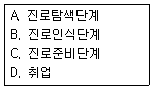
- A-B-C-D
- B-A-C-D
- B-C-A-D
- A-C-B-D
(정답률: 73%)
90. 체계적 둔감법(systematic desensitize)의 기초가 되는 학습원리는?
- 혐오 조건형성
- 고전적 조건형성
- 조작적 조건형
- 고차적 조건형성
(정답률: 80%)
91. 약물남용 청소년의 진단 및 평가에 있어서 상담자가 유의해야 할 사항으로 틀린 것은?
- 청소년이 약물을 사용한 경험이 있다는 것만으로 약물남용자로 낙인찍지 않도록 한다.
- 청소년 약물남용과 관련해서 임상적으로 이중진단의 가능성이 높은 심리적 장애는 우울증, 품행장애, 주의결핍-과잉행동장애, 자살 등이 있다.
- 청소년 약물남용자들은 약물사용 동기나 형태, 신체적 결과 등에서 성인과 다른 양상을 보이므로 DSM-Ⅳ와 같은 성인 위주 진단체계의 적용에 한계가 있다.
- 가족문제나 학교 부적응 등의 관련 요인들의 영향으로 인한 일차적인 약물남용의 문제를 보이는 경우, 상담의 목표도 이에 따라야 한다.
(정답률: 72%)
92. 아동청소년의 폭력비행을 상담할 때 부모를 통해 개입하는 방법으로 가장 적합한 것은?
- 자녀가 반사회적 행동을 하면 심하게 야단을 치게 한다.
- 친사회적인 행동을 보이면 일관되게 보상을 주도록 한다.
- 가족모임을 통해서 훈계와 압박을 가하게 한다.
- 폭력을 휘두를 때마다 자녀를 매로 다스리게 한다.
(정답률: 81%)
93. 다음 중 가족상담의 원리와 가장 거리가 먼 것은?
- 문제로 지목된 가족원에게 초점을 두어 사례를 개념화 한다.
- 과거의 사건이나 경험보다 현재 일어나는 양상을 다룬다.
- 가족 구성원들의 관심사를 이해하고 수용한다.
- 자기 의견을 분명히 표현하고 다른 입장을 경청하는 의사소통을 촉진한다.
(정답률: 71%)
94. 다음 사례에서 A씨의 자살 전조 신호와 가장 거리가 먼 행동은?
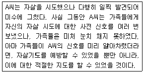
- 자신이 아끼던 물건을 동생에게 주었다.
- 전보다 식욕이 현저히 떨어졌다.
- 공연히 들떠서 말을 많이 했다.
- 자신은 죽으면 화장을 원한다고 말했다.
(정답률: 82%)
95. 다음 중 상담목표의 구성요소에 대한 설명으로 틀린 것은?
- 과정목표는 내담자의 변화에 필요한 상담분위기의 조성과 관련된다.
- 과정목표에 대한 결과는 내담자의 책임이다.
- 결과목표는 내담자가 상담을 통해 이루고자 하는 구체적인 삶의 변화와 관련된다.
- 결과목표는 일반적으로 객관적일수록 효과적이다.
(정답률: 78%)
96. 다음은 무엇에 관한 설명인가?
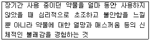
- 내성
- 금단증상
- 약물의존
- 약물남용
(정답률: 85%)
97. 정신분석 상담에서 전이분석이 중요한 이유로 가장 적합한 것은?
- 내담자에 대한 상담자의 감정이 나온다.
- 상담자의 감정을 드러내지 않게 해준다.
- 무의식 내용을 알 수 있는 최선의 길이다.
- 내담자에게 현재 관계에 대한 과거의 영향을 깨닫게 해준다.
(정답률: 67%)
98. 지금과 여기, 현재의 체험을 중시하는 치료이론이 아닌 것은?
- 인간중심적 치료
- 게슈탈트 치료
- 정신분석
- 실존치료
(정답률: 75%)
99. 다음 중 성폭력에 관한 설명으로 가장 적합한 것은?
- 성폭력은 성적 자기결정권의 침해이다.
- 끝까지 저항하면 강간은 불가능하다.
- 성폭력의 피해자는 여성뿐이다.
- 강간은 낯선 사람에 의해서만 발생한다.
(정답률: 79%)
100. 다음은 무엇에 대한 설명인가?
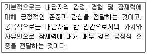
- 공감
- 반영적 경청
- 내용의 재진술
- 수용적 존중
(정답률: 65%)